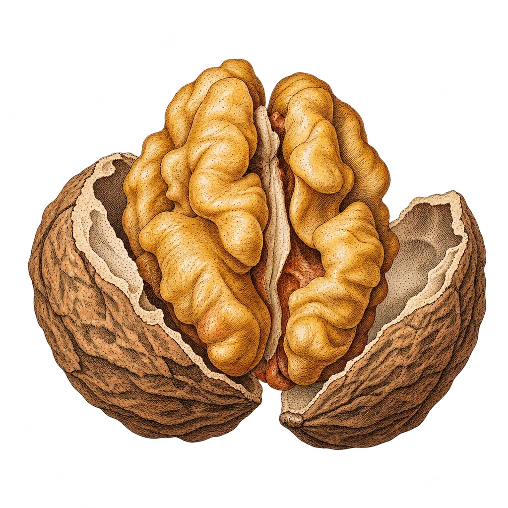

A field guide to one word
Kernel
one word, many meanings across computing, math and science

103 meanings · 8 families
kernel: from Old English cyrnel, “little seed”
0
Overview
All 103 meanings at a glance
Each picture is one meaning of “kernel.” The eight wedges group them by what kind of thing the kernel is, and the most familiar ones sit near the center. Hover to see a name; click to read more.
∴
Which kernel is it?
Met the word somewhere? Answer a few questions to find its family.
ℛ
Index
Every meaning, A to Z